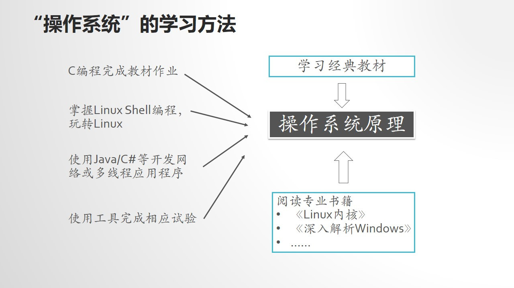
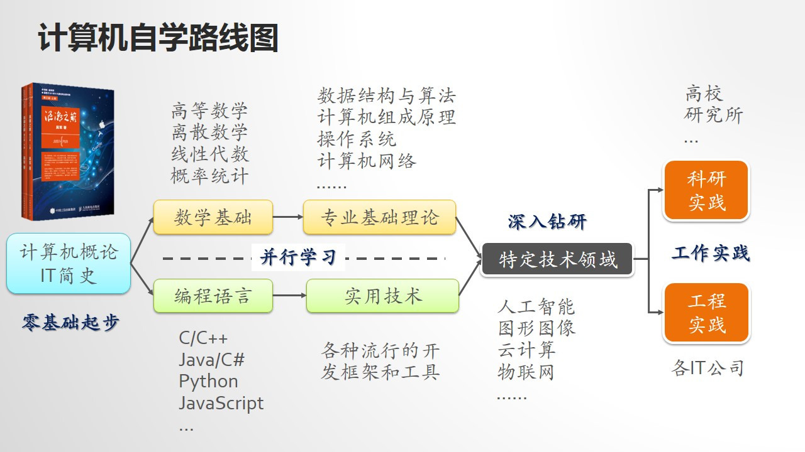
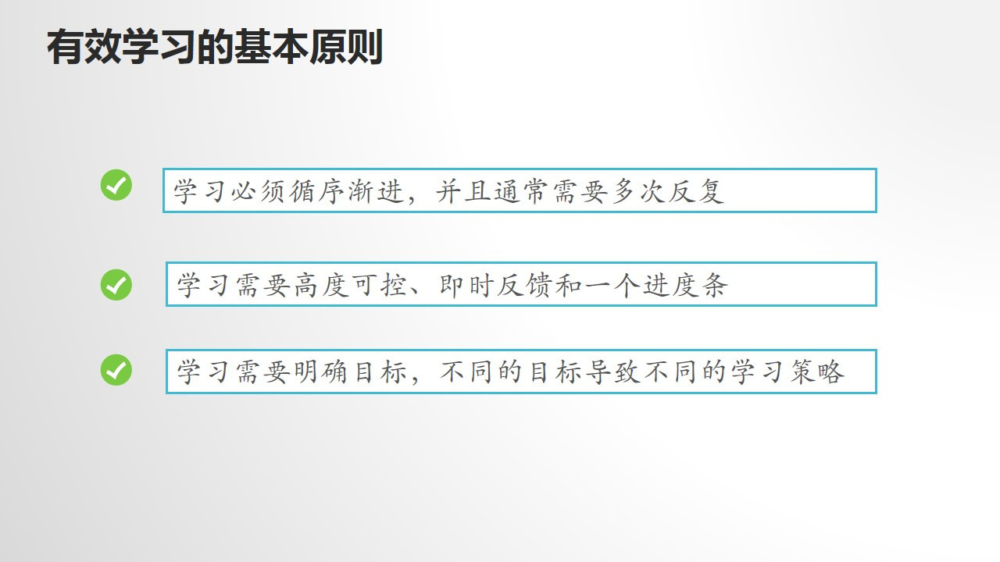
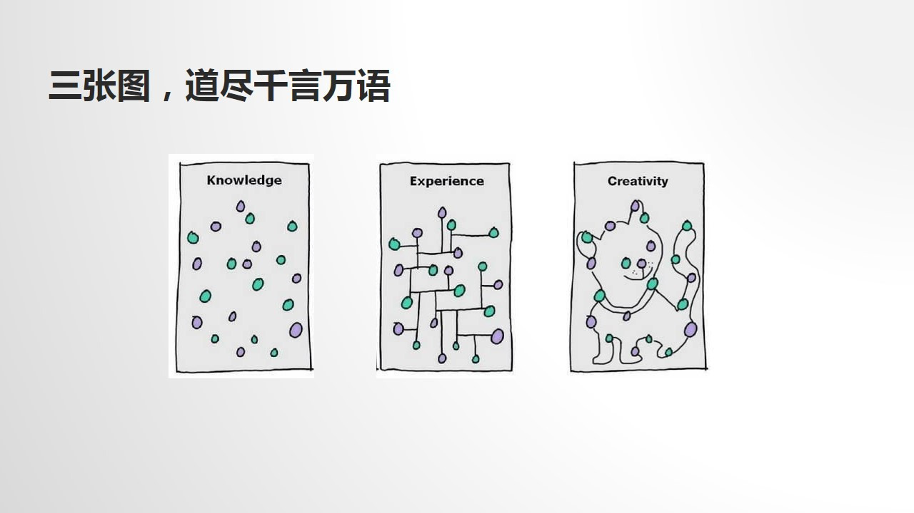
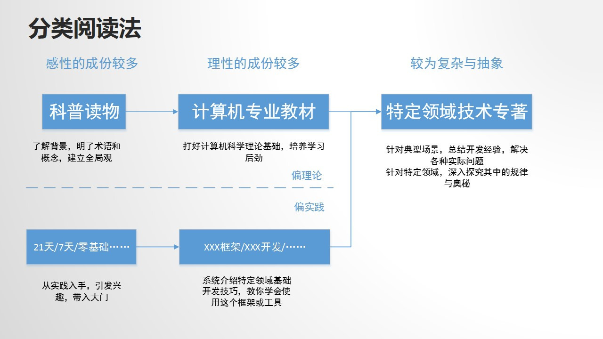

<!DOCTYPE html>
<html>
<head><meta name="generator" content="Hexo 3.8.0">
  <meta charset="utf-8">
  
  <title>Gavin-Gavin</title>

  <!-- keywords -->
  
    <meta name="keywords" content="Gavin">
  

  <meta name="viewport" content="width=device-width, initial-scale=1, maximum-scale=1">
  <meta name="description" content="Study Record Blog">
<meta name="keywords" content="Gavin">
<meta property="og:type" content="website">
<meta property="og:title" content="Gavin">
<meta property="og:url" content="http://yoursite.com/index.html">
<meta property="og:site_name" content="Gavin">
<meta property="og:description" content="Study Record Blog">
<meta property="og:locale" content="English & Chinese">
<meta name="twitter:card" content="summary">
<meta name="twitter:title" content="Gavin">
<meta name="twitter:description" content="Study Record Blog">
  
    <link rel="alternative" href="/atom.xml" title="Gavin" type="application/atom+xml">
  
  
    <link rel="icon" href="https://weizhe.xyz/timg.ico">
  
  <link rel="stylesheet" href="/css/style.css">
  
  

  <script src="//cdn.bootcss.com/require.js/2.3.2/require.min.js"></script>
  <script src="//cdn.bootcss.com/jquery/3.1.1/jquery.min.js"></script>

  
      <script src="https://cdn1.lncld.net/static/js/av-core-mini-0.6.1.js"></script>
<script>AV.initialize("your_app_id", "your_app_key");</script>
<script src="/js/Counter.js"></script>
  
</head></html>
<body>
  <div id="container">
    <div id="particles-js"></div>
    <div class="left-col">
    <div class="overlay"></div>
<div class="intrude-less">
	<header id="header" class="inner">
		<a href="/" class="profilepic">
			
			
			
		</a>

		<hgroup>
		  <h1 class="header-author"><a href="/">Weizhe Yang</a></h1>
		</hgroup>

		
		<p class="header-subtitle">Gavin</p>
		

		
			<div class="switch-btn">
				<div class="icon">
					<div class="icon-ctn">
						<div class="icon-wrap icon-house" data-idx="0">
							<div class="birdhouse"></div>
							<div class="birdhouse_holes"></div>
						</div>
						<div class="icon-wrap icon-ribbon hide" data-idx="1">
							<div class="ribbon"></div>
						</div>
						
						<div class="icon-wrap icon-link hide" data-idx="2">
							<div class="loopback_l"></div>
							<div class="loopback_r"></div>
						</div>
						
						
						<div class="icon-wrap icon-me hide" data-idx="3">
							<div class="user"></div>
							<div class="shoulder"></div>
						</div>
						
					</div>
					
				</div>
				<div class="tips-box hide">
					<div class="tips-arrow"></div>
					<ul class="tips-inner">
						<li>菜单</li>
						<li>标签</li>
						
						<li>友情链接</li>
						
						
						<li>关于我</li>
						
					</ul>
				</div>
			</div>
		

		<div class="switch-area">
			<div class="switch-wrap">
				<section class="switch-part switch-part1">
					<nav class="header-menu">
						<ul>
						
							<li><a href="/">主页</a></li>
				        
							<li><a href="/archives">所有文章</a></li>
				        
						</ul>
					</nav>
					<nav class="header-nav">
						<div class="social">
							
								<a class="github" target="_blank" href="https://github.com/Zhev587/" title="github">github</a>
					        
						</div>
					</nav>
				</section>
				
				
				<section class="switch-part switch-part2">
					<div class="widget tagcloud" id="js-tagcloud">
						<a href="/tags/HPC/" style="font-size: 10px;">HPC</a> <a href="/tags/hexo/" style="font-size: 10px;">hexo</a>
					</div>
				</section>
				
				
				
				<section class="switch-part switch-part3">
					<div id="js-friends">
					
			          <a target="_blank" class="main-nav-link switch-friends-link" href="https://www.iczc.me/">iczc</a>
			        
			        </div>
				</section>
				

				
				
				<section class="switch-part switch-part4">
				
					<div id="js-aboutme">A student of the College of Computer Engineering of Weifang University</div>
				</section>
				
			</div>
		</div>
	</header>				
</div>
    </div>
    <div class="mid-col">
      <nav id="mobile-nav">
  	<div class="overlay">
  		<div class="slider-trigger"></div>
  		<h1 class="header-author js-mobile-header hide">Weizhe Yang</h1>
  	</div>
	<div class="intrude-less">
		<header id="header" class="inner">
			<div class="profilepic">
				
			</div>
			<hgroup>
			  <h1 class="header-author">Weizhe Yang</h1>
			</hgroup>
			
			<p class="header-subtitle">Gavin</p>
			
			<nav class="header-menu">
				<ul>
				
					<li><a href="/">主页</a></li>
		        
					<li><a href="/archives">所有文章</a></li>
		        
		        <div class="clearfix"></div>
				</ul>
			</nav>
			<nav class="header-nav">
				<div class="social">
					
						<a class="github" target="_blank" href="https://github.com/Zhev587/" title="github">github</a>
			        
				</div>
			</nav>
		</header>				
	</div>
</nav>
      <div class="body-wrap">
  
    <article id="post-Welcome" class="article article-type-post" itemscope itemprop="blogPost">
  
    <div class="article-meta">
      <a href="/2019/12/14/Welcome/" class="article-date">
  	<time datetime="2019-12-14T12:15:40.484Z" itemprop="datePublished">2019-12-14</time>
</a>
    </div>
  
  <div class="article-inner">
    
      <input type="hidden" class="isFancy">
    
    
      <header class="article-header">
        
  
    <h1 itemprop="name">
      <a class="article-title" href="/2019/12/14/Welcome/">
        Welcome
        
      </a>
    </h1>
  

      </header>
      
    
    <div class="article-entry" itemprop="articleBody">
      
        <h2 id="Welcome"><a href="#Welcome" class="headerlink" title="Welcome!"></a>Welcome!</h2><figure class="highlight plain"><table><tr><td class="gutter"><pre><span class="line">1</span><br><span class="line">2</span><br><span class="line">3</span><br><span class="line">4</span><br><span class="line">5</span><br></pre></td><td class="code"><pre><span class="line">__        __         _                                       _             _                           _</span><br><span class="line">\ \      / /  ___  | |   ___    ___    _ __ ___     ___   _| |_    ___    | |__     ___   _ __   ___  | |</span><br><span class="line"> \ \ /\ / /  / _ \ | |  / __|  / _ \  | &apos;_ ` _ \   / _ \  |_ __|  / _ \   | &apos;_ \   / _ \ | &apos;__| / _ \ | |</span><br><span class="line">  \ V  V /  |  __/ | | | (__  | (_) | | | | | | | |  __/   | |_  | (_) |  | | | | |  __/ | |   |  __/ |_|</span><br><span class="line">   \_/\_/    \___| |_|  \___|  \___/  |_| |_| |_|  \___|    \__|  \___/   |_| |_|  \___| |_|    \___| (_)</span><br></pre></td></tr></table></figure>
<h3 id="Welcome-to-Weizhe’s-blog-I’m-learning-hard-on-Information-Technology-and-this-is-where-I-save-my-study-records-Not-all-the-essays-here-are-my-original-works-but-they-have-helped-me-a-lot-in-the-past-time-so-I-recorded-them-to-share-with-everyone-and-it-also-remind-me-what-should-I-do-if-I-face-the-same-situations-which-I-have-met-in-the-past-but-forgot-how-to-operate"><a href="#Welcome-to-Weizhe’s-blog-I’m-learning-hard-on-Information-Technology-and-this-is-where-I-save-my-study-records-Not-all-the-essays-here-are-my-original-works-but-they-have-helped-me-a-lot-in-the-past-time-so-I-recorded-them-to-share-with-everyone-and-it-also-remind-me-what-should-I-do-if-I-face-the-same-situations-which-I-have-met-in-the-past-but-forgot-how-to-operate" class="headerlink" title="Welcome to Weizhe’s blog, I’m learning hard on Information Technology, and this is where I save my study records.Not all the essays here are my original works, but they have helped me a lot in the past time, so I recorded them to share with everyone and it also remind me what should I do if I face the same situations which I have met in the past but forgot how to operate."></a>Welcome to Weizhe’s blog, I’m learning hard on Information Technology, and this is where I save my study records.Not all the essays here are my original works, but they have helped me a lot in the past time, so I recorded them to share with everyone and it also remind me what should I do if I face the same situations which I have met in the past but forgot how to operate.</h3><figure class="highlight plain"><table><tr><td class="gutter"><pre><span class="line">1</span><br><span class="line">2</span><br><span class="line">3</span><br><span class="line">4</span><br><span class="line">5</span><br><span class="line">6</span><br><span class="line">7</span><br><span class="line">8</span><br><span class="line">9</span><br></pre></td><td class="code"><pre><span class="line">    .- &lt;O&gt; -.        .-====-.      ,-------.      .-=&lt;&gt;=-.</span><br><span class="line">   /_-\&apos;&apos;&apos;/-_\      / / &apos;&apos; \ \     |,-----.|     /__----__\</span><br><span class="line">  |/  o) (o  \|    | | &apos;)(&apos; | |   /,&apos;-----&apos;.\   |/ (&apos;)(&apos;) \|</span><br><span class="line">   \   ._.   /      \ \    / /   &#123;_/(&apos;) (&apos;)\_&#125;   \   __   /</span><br><span class="line">   ,&gt;-_,,,_-&lt;.       &gt;&apos;=jf=&apos;&lt;     `.   _   .&apos;    ,&apos;--__--&apos;.</span><br><span class="line"> /      .      \    /        \     /&apos;-___-&apos;\    /    :|    \</span><br><span class="line">(_)     .     (_)  /          \   /         \  (_)   :|   (_)</span><br><span class="line"> \_-----&apos;____--/  (_)        (_) (_)_______(_)   |___:|____|</span><br><span class="line">  \___________/     |________|     \_______/     |_________|</span><br></pre></td></tr></table></figure>
      
    </div>
    
    <div class="article-info article-info-index">
      
      
      

      
        
<div class="counter-tag counter">
    <span id="/2019/12/14/Welcome/" class="leancloud_visitors post-title-link" style="font-size: 12px" data-flag-title="Welcome">
         &nbsp;
        view
    </span>
</div>

      
      <div class="clearfix"></div>
    </div>
      
    
  </div>
  
</article>


  
    <article id="post-高效学习计算机专业课程" class="article article-type-post" itemscope itemprop="blogPost">
  
    <div class="article-meta">
      <a href="/2019/07/28/高效学习计算机专业课程/" class="article-date">
  	<time datetime="2019-07-28T11:09:47.000Z" itemprop="datePublished">2019-07-28</time>
</a>
    </div>
  
  <div class="article-inner">
    
      <input type="hidden" class="isFancy">
    
    
      <header class="article-header">
        
  
    <h1 itemprop="name">
      <a class="article-title" href="/2019/07/28/高效学习计算机专业课程/">
        高效学习计算机专业课程
        
      </a>
    </h1>
  

      </header>
      
    
    <div class="article-entry" itemprop="articleBody">
      
        <p>计算机专业各种骨干核心课程中包容了计算机科学中最基础的知识，计算机专业课程难度较大，可锻炼自身思维能力。计算机专业的学习与实用应用型知识的学习相互促进</p>
<h2 id="计算机专业课程："><a href="#计算机专业课程：" class="headerlink" title="计算机专业课程："></a>计算机专业课程：</h2><ul>
<li><p>必修课：计算机专业的核心课程，代表着一名计算机专业学生应该具备的计算机科学理论和基础（最重要的四门）：</p>
<ol>
<li><p>数据结构与算法<br><br> 数据结构表示信息的本身，算法表示信息的处理过程，数据结构与算法不能分开</p>
<p> 课程大致分为两大块：</p>
<ul>
<li>数据结构与算法的理论基础：弄明白概念和术语，掌握如何设计算法，如何评价一个算法的优劣</li>
<li>具体的数据结构和算法的介绍：通常只需要掌握最常用的几种，没有必要每个都去深究，每种数据结构和算法往往都有特定的应用场景，用来解决特定的问题。</li>
<li>学算法之前建议先掌握离散数学</li>
<li>对于算法，能够体会它的思想，知道应用场景和优缺点就足够，具体应用中需要自己设计算法的场景并不多</li>
<li>各种编程语言或者开发框架中都给出了算法的组件，大多能理解用途，会调用就可以</li>
</ul>
</li>
<li><p>计算机组成原理<br> <br> 介绍了计算机系统是由哪些部件组成的，这些部件之间是如何相互协作完成数据处理功能，同时又能满足成本、功耗等指标的。</p>
<p> 学习这门课前通常需要学习数字电路基础,建议先学习《编码》（强烈推荐），学完这门课后可进一步学习操作系统和编译原理</p>
<p> 学习内容：</p>
<ul>
<li>计算机系统的概述</li>
<li>指令集设计</li>
<li>处理器结构</li>
<li>I/O与存储系统与设计</li>
<li>并行计算（硕士）</li>
<li>云计算（硕士）</li>
</ul>
</li>
<li><p>操作系统<br><br> 位于多数软件开发工作的第”N-1”层，必须很好地掌握.</p>
<p> 学习之前必须学号数据结构与算法，也需要掌握计算机组成原理的基础，还要掌握C语言</p>
<p> 学习关键：<br> <br> 必须要将其与软件开发以及动手实验结合起来</p>
<p> Linux：在互联网和嵌入式开发占主导地位<br> Windows：桌面应用与行业应用</p>
</li>
<li><p>计算机网络<br><br>掌握相应的网络协议是掌握各种上层应用软件开发技术的关键。最大的特点就是分层：</p>
<p>《计算机网络：自顶向下方法》就是从上层协议介绍到下层协议</p>
<p>《计算机网络》Andrew S.Tanebaum：自下而上来介绍</p>
<p>《计算机网络：系统方法》则以横切的方式，针对一个特定的网络问题来展开介绍</p>
<p>弄清楚三个问题：</p>
<ol>
<li>计算机是如何连接的</li>
<li>数据是怎样在计算机网路中传输的</li>
<li>网络应用软件系统是怎样构建起来的</li>
</ol>
<p>学习建议：</p>
<ul>
<li>理解分层的概念，清楚每一层所解决的主要问题是什么，面临的主要问题是什么，设计者针对这一问题的解决方案是什么，应用了哪些基本原理，有哪些常用的算法</li>
<li>阅读科普书籍入门计算机网络</li>
<li>动手用编程语言结合计算机网络协议来完成一些简单的任务</li>
<li>应用层次的学习：重点学习HTTP协议并掌握面向对象知识</li>
<li>学习网络抓包工具巩固计算机网络的基础</li>
</ul>
</li>
</ol>
</li>
</ul>
<ul>
<li><p>ACM总结的18个计算机科学关键领域：</p>
<p><br></p>
<ul>
<li>对知识的掌握程度（三级）：<ol>
<li>Familiarity（了解）：What do you know about this? (你对它了解多少？)</li>
<li>Usage（会用）：What do you know how to do?(关于怎样做，你知道多少？)</li>
<li>Assessment（评估与决断）：Why would you do that?（为什么要这么做？）  </li>
</ol>
</li>
<li>针对特定的场景和特定的问题能找到多种解决方案，并能够对这些方案进行评估从中选出合适的来应用</li>
<li>ACM报告：软件工程知识领域中有关软件过程的知识集合，衡量对这些知识的掌握程度。</li>
<li>自学的核心任务：这18个核心领域之间有着紧密的联系，形成一个知识网络，构建这个知识网络就是自学的核心任务</li>
</ul>
</li>
</ul>
<p></p>
<ul>
<li>对计算机专业有了一定认识后要做两件事<ol>
<li>掌握一门编程语言：<br>这4种编程语言基本上是从事计算机行业所必须会掌握的语言，从哪一门入手都可以。<ul>
<li>C</li>
<li>Java</li>
<li>Java Script</li>
<li>Python</li>
</ul>
</li>
<li>学好数学</li>
</ol>
</li>
</ul>
<h2 id="学习方法："><a href="#学习方法：" class="headerlink" title="学习方法："></a>学习方法：</h2><ul>
<li></li>
<li>知识组块：根据知识的内在逻辑和意义吧相关联的信息碎片理解和重组而建立</li>
<li>人类的学习过程，就是把吸收的知识转换为知识组块存入人的长期记忆中的过程</li>
<li></li>
<li>(学以致用)<ul>
<li>根据特定场景分析特定的需求，确定学习的目的，有选择地读特定的书，读书中特定的部分，进行特定的实践，形成特定的知识组块，组合这些组块去解决特定的问题</li>
</ul>
<ol>
<li>针对具体的场景，根据场景需求，搜集各种资源，构建知识框架</li>
<li>通过学习，不断向原本的框架补充内容</li>
<li>建立好知识框架，解决问题所需要的知识组块全部准备就位就可以着手解决实际问题</li>
</ol>
</li>
<li></li>
<li>学习需要循序渐进：<ul>
<li>请教高人指导学习路线</li>
<li>对于经典的书籍，看不懂时候不要硬着头皮看，效率会很低，要记录下看不懂的地方，停下来弄明白看不懂的原因，是否是没有掌握某些基础的东西，若是则先放一放，掌握基础后再来。</li>
</ul>
</li>
<li>将学习划分为各个阶段，给每个阶段制定一个明确的目标和任务，生成学习的进度条，有助于增强学习动力</li>
<li><p>真正有效的学习：<br></p>
<p>最初学到的只是些孤立的知识点，通过消化吸收和实践，知识点连接起来形成知识组块，组块之间再连接就形成知识之网</p>
</li>
</ul>
<p><strong>计算机专业的学习要落实在理论与实践的统一上</strong></p>
<ul>
<li>先实践再理论的学习效果更佳</li>
</ul>
<h2 id="新知识的学习："><a href="#新知识的学习：" class="headerlink" title="新知识的学习："></a>新知识的学习：</h2><ul>
<li>将新学来的知识附着到已经形成的知识网络上、</li>
<li>学习的误区：将各个知识点当做一个个孤立的点去攻克，而忽视新旧知识之间的联系</li>
<li>特定的知识往往要与特定的知识网络相结合后才能真正的学会</li>
</ul>
<h2 id="计算机专业学习的”N-1”与”N-1”"><a href="#计算机专业学习的”N-1”与”N-1”" class="headerlink" title="计算机专业学习的”N+1”与”N-1”"></a>计算机专业学习的”N+1”与”N-1”</h2><p><br>清楚自己的需求，掌握和自己的需求关系最紧密的上一层和下一层知识就够了，不需要每方面都做到精通，那是不现实的</p>
<p>从硬件到软件，计算机系统分为多层，每层都分为特定的知识和技术，都对应着特定的工作岗位，要依据期望从事的工作岗位，确定工作的层次，从而清楚自己需要精通的知识集合以及对其他知识集合需要了解和把握的程度</p>
<h2 id="选择书籍的基本原则和方法"><a href="#选择书籍的基本原则和方法" class="headerlink" title="选择书籍的基本原则和方法"></a>选择书籍的基本原则和方法</h2><p>对于经典书籍，在不具备相关的基础和技术经验的前提下，经典对自己是没有意义的</p>
<p>选择一本自己已针对其经拥有一定的实施储备，可以读懂的书来读，书籍作者一般都会在前言假设读者应该具备的基础，若大多陌生，则可以先扫清障碍，留来以后再看。或者如果作者没有在前言明示基础，则可以先读一部分，若开头就读不懂，则仍应先搞基础，暂时放弃这本书</p>
<p></p>
<p>通过浅显易懂的科普书籍入门，通过专业教材来掌握基础并深入学习，再读专业技术书籍</p>
<p>建议多阅读英文书籍，或中英文书籍</p>
<p>读书时多注意专业术语的中英文翻译的对照，可做成一个表格。</p>
<p><strong>多遍阅读法</strong><br></p>
<ul>
<li>认真读书的前言，目录和序言。</li>
<li>快速浏览开头和结尾，掌握哪些部分细读，哪些部分略读</li>
<li>第一遍重点看章节中的特定的应用场景和要解决的问题、结论和观点，不要深究细节</li>
<li>第二遍多在干货上下功夫</li>
<li>读第四遍之前要查找资料，学习完基础后再开始</li>
<li>大部分书籍只需要读第一遍和第二遍即可</li>
</ul>
<h2 id="攻克难懂的经典书籍"><a href="#攻克难懂的经典书籍" class="headerlink" title="攻克难懂的经典书籍"></a>攻克难懂的经典书籍</h2><ul>
<li>读科普书籍或文章，通过亲手练习来获取特定领域的背景知识</li>
<li>对于数学公式较多的书籍，先弄明白作者所用的知识是哪方面的数学，先学习相应的数学基础再来参照着读这类书籍</li>
<li>有些系列的书是建立在另一本书看完的基础上，必须先读基础的书<br></li>
</ul>
<h2 id="计算机与数学"><a href="#计算机与数学" class="headerlink" title="计算机与数学"></a>计算机与数学</h2><p><br>线性代数是数字图像处理的基础</p>
<p>概率论与数理统计是大数据和人工智能的基础</p>
<h2 id="计算机全局观的建立"><a href="#计算机全局观的建立" class="headerlink" title="计算机全局观的建立"></a>计算机全局观的建立</h2><p>读计算机专业概论，粗略的知道这个领域所涵盖的知识面，并了解自己当前所学的知识在整个计算机领域中的地位</p>
<p>选择最新版本的专业概论书籍</p>
<h2 id="书籍推荐："><a href="#书籍推荐：" class="headerlink" title="书籍推荐："></a>书籍推荐：</h2><ul>
<li>《浪潮之巅》吴军： 主要讲述IT产业发展的脉络和硅谷明星公司的兴衰沉浮</li>
<li>《数学之美》吴军： 介绍数学在计算机领域的具体应用</li>
<li>《学习之道》：针对学习的研究成果，用来改进学习方法</li>
<li>《微积分读本》普林斯顿：采用内心独白的方式介绍微积分，能够比较顺利的读懂</li>
<li>《离散数学及其应用》（机械工业出版社）</li>
<li>《线性代数及其应用》：展示线性代数在应用中的案例，更容易了解这门课的用途</li>
<li>《计算机科学概论》Nell Dale：采用剥洋葱方式从内向外介绍计算机科学</li>
<li>《计算机科学概论》J.Glenn Brookshear：由每个主题自然而然地引导出下一个主题，由具体到抽象</li>
<li>《算法图解》</li>
<li>《算法导论》：针对特定算法的数学分析与证明</li>
<li>《Linux》内核</li>
<li>《编码》Charies Petzold</li>
<li>《计算机网络：自顶向下方法》</li>
<li><p>《深入理解计算机系统》：从使用者而不是从计算机系统设计者的角度来组织材料<br><br>并不适合零基础入门，阅读者至少应该学过计算机科学的导论，并有一些C语言和Linux的开发经验</p>
<p>这本书能够帮助读者将零散的知识组块化，在建立组块之间的联系，可以通过这本书了解计算机系统的整体设计，明白这些设计因素对于应用软件开发和运行的影响，建立一个完整的计算机专业知识体系和整体的知识框架，在这个框架之上再选择有针对性的书籍钻研特定的子领域</p>
</li>
</ul>

      
    </div>
    
    <div class="article-info article-info-index">
      
      
      

      
        
<div class="counter-tag counter">
    <span id="/2019/07/28/高效学习计算机专业课程/" class="leancloud_visitors post-title-link" style="font-size: 12px" data-flag-title="高效学习计算机专业课程">
         &nbsp;
        view
    </span>
</div>

      
      <div class="clearfix"></div>
    </div>
      
    
  </div>
  
</article>


  
    <article id="post-nvme" class="article article-type-post" itemscope itemprop="blogPost">
  
    <div class="article-meta">
      <a href="/2019/07/17/nvme/" class="article-date">
  	<time datetime="2019-07-17T01:18:14.000Z" itemprop="datePublished">2019-07-17</time>
</a>
    </div>
  
  <div class="article-inner">
    
      <input type="hidden" class="isFancy">
    
    
      <header class="article-header">
        
  
    <h1 itemprop="name">
      <a class="article-title" href="/2019/07/17/nvme/">
        无M.2的老台式实现NVME固态硬盘支持
        
      </a>
    </h1>
  

      </header>
      
    
    <div class="article-entry" itemprop="articleBody">
      
        <h2 id="无M-2的老台式实现NVME固态硬盘支持"><a href="#无M-2的老台式实现NVME固态硬盘支持" class="headerlink" title="无M.2的老台式实现NVME固态硬盘支持"></a>无M.2的老台式实现NVME固态硬盘支持</h2><p>在升级自己老式台式机时总会遇见接口过于古老或协议不支持的情况，比如给一些老式主板升级的话不想接SATA这种相对NVME慢几倍的固态硬盘，而主板上又没有M.2的接口，甚至不支持NVME协议，老主板刷BIOS的话也会有风险，处境就非常尴尬。这篇就将介绍如何给无M.2接口甚至不支持NVME协议的主板升级NVME固态硬盘。</p>
<p>工具:</p>
<ol>
<li><p>M.2转PCI-E转接卡</p>
</li>
<li><p>U盘</p>
</li>
<li><p>软件：BD Utility(Boot Disk Utility)</p>
</li>
</ol>
<p>BDUtility的下载：官网为<a href="http://cvad-mac.narod.ru/index/bootdiskutility_exe/0-5" target="_blank" rel="noopener">http://cvad-mac.narod.ru/index/bootdiskutility_exe/0-5</a><br>这是个外网，需要翻墙才可以打开下载，不能翻墙下载的可以到网盘下载：链接：<a href="https://pan.baidu.com/s/1SVR6RPyh6U2pnNwYxPpQeQ" target="_blank" rel="noopener">https://pan.baidu.com/s/1SVR6RPyh6U2pnNwYxPpQeQ</a>提取码：wtn6</p>
<p>下载完成后解压，插上U盘，打开BDUtility，选择U盘，点击Format，软件会从服务器下载各种模块安装，等几分钟后显示All done就表示引导盘已经做好。</p>
<p><strong><em>关键部分</em></strong>：BootDiskUtility将U盘分成了一个200MB的FAT32分区CLOVER和一个未分区区块，引导装在这个CLOVER分区中，打开它，找到<code>EFI\CLOVER\drivers-Off\drivers64UEFI</code>文件夹下的<code>NVMExpressDxe-64.efi</code>文件, 分别将它复制到： </p>
<figure class="highlight plain"><table><tr><td class="gutter"><pre><span class="line">1</span><br><span class="line">2</span><br></pre></td><td class="code"><pre><span class="line">EFI\CLOVER\drivers64  </span><br><span class="line">EFI\CLOVER\drivers64UEFI</span><br></pre></td></tr></table></figure>
<p>两个目录下，就大功告成了！</p>
<p>最后，重启电脑，进入BIOS，将刚做好的U盘引导盘作为第一启动盘，从U盘引导启动，启动后会出现引导菜单，默认第一个盘符就是NVME的引导分区，按回车选择或者等待自动选择就会成功进入系统。</p>
<p>至于固态硬盘中的系统，我的是在另一个电脑上装好之后才插到老台式上的，如果需要装系统的话，就正常操作，插上另一个系统引导盘按常规操作来就行，装系统时电脑上最好只有一个NVME SSD存在。如果装系统时系统引导盘找不到NVME的分区的话还是建议在另一台电脑上装好系统后直接引导。</p>

      
    </div>
    
    <div class="article-info article-info-index">
      
      
      

      
        
<div class="counter-tag counter">
    <span id="/2019/07/17/nvme/" class="leancloud_visitors post-title-link" style="font-size: 12px" data-flag-title="无M.2的老台式实现NVME固态硬盘支持">
         &nbsp;
        view
    </span>
</div>

      
      <div class="clearfix"></div>
    </div>
      
    
  </div>
  
</article>


  
    <article id="post-HotKey" class="article article-type-post" itemscope itemprop="blogPost">
  
    <div class="article-meta">
      <a href="/2019/06/08/HotKey/" class="article-date">
  	<time datetime="2019-06-08T03:18:21.000Z" itemprop="datePublished">2019-06-08</time>
</a>
    </div>
  
  <div class="article-inner">
    
      <input type="hidden" class="isFancy">
    
    
      <header class="article-header">
        
  
    <h1 itemprop="name">
      <a class="article-title" href="/2019/06/08/HotKey/">
        HotKey
        
      </a>
    </h1>
  

      </header>
      
    
    <div class="article-entry" itemprop="articleBody">
      
        <h1 id="利用AutoHotKey实现常用操作的快捷键设置（充分利用CapsLock键）"><a href="#利用AutoHotKey实现常用操作的快捷键设置（充分利用CapsLock键）" class="headerlink" title="利用AutoHotKey实现常用操作的快捷键设置（充分利用CapsLock键）"></a>利用AutoHotKey实现常用操作的快捷键设置（充分利用CapsLock键）</h1><ol>
<li>下载AutoHotKey:<a href="https://www.autohotkey.com/" target="_blank" rel="noopener">https://www.autohotkey.com/</a></li>
<li>在任一目录下右击-&gt;新建-&gt;AutoHotKey Script-&gt;输入文件名（或新建.txt文本文档，将扩展名改为.ahk）eg: AutoHotKey.ahk</li>
<li>右击新建好的文件AutoHotKey.ahk，选择打开方式，选择AutoHotKey，勾选始终用此应用打开.ahk文件</li>
<li>编辑AutoHotKey.ahk，此操作可以有多种方法<ul>
<li>直接右键点编辑</li>
<li>VsCode打开 （推荐）</li>
</ul>
</li>
<li>在编辑器中打开后,进入<br><a href="https://github.com/Zhev587/zhev587.github.io/blob/master/CapsLock.ahk" target="_blank" rel="noopener">https://github.com/Zhev587/zhev587.github.io/blob/master/CapsLock.ahk</a><br>将AutoHotKey.ahk中的代码复制下来粘贴到自己的文件中，并保存。</li>
<li>打开自己的AutoHotKey.ahk文件，即可运用其中的所有快捷键。</li>
<li>每次开机都需要运行一遍的话会比较麻烦，将源文件放到开机自启文件夹中即可</li>
</ol>

      
    </div>
    
    <div class="article-info article-info-index">
      
      
      

      
        
<div class="counter-tag counter">
    <span id="/2019/06/08/HotKey/" class="leancloud_visitors post-title-link" style="font-size: 12px" data-flag-title="HotKey">
         &nbsp;
        view
    </span>
</div>

      
      <div class="clearfix"></div>
    </div>
      
    
  </div>
  
</article>


  
    <article id="post-hexo" class="article article-type-post" itemscope itemprop="blogPost">
  
    <div class="article-meta">
      <a href="/2019/06/07/hexo/" class="article-date">
  	<time datetime="2019-06-07T04:48:55.000Z" itemprop="datePublished">2019-06-07</time>
</a>
    </div>
  
  <div class="article-inner">
    
      <input type="hidden" class="isFancy">
    
    
      <header class="article-header">
        
  
    <h1 itemprop="name">
      <a class="article-title" href="/2019/06/07/hexo/">
        hexo
        
      </a>
    </h1>
  

      </header>
      
    
    <div class="article-entry" itemprop="articleBody">
      
        <h1 id="使用Hexo搭建静态博客"><a href="#使用Hexo搭建静态博客" class="headerlink" title="使用Hexo搭建静态博客"></a>使用Hexo搭建静态博客</h1><ul>
<li>安装<a href="https://nodejs.org/en/download/" target="_blank" rel="noopener">nodejs</a><br>Node的官方模块仓库网速太慢，模块仓库需要切换到阿里的源。<br>不安装cnpm只用淘宝镜像，设置npm的镜像： <figure class="highlight plain"><table><tr><td class="gutter"><pre><span class="line">1</span><br></pre></td><td class="code"><pre><span class="line">$ npm config set registry https://registry.npm.taobao.org/</span><br></pre></td></tr></table></figure>
</li>
</ul>
<ul>
<li><p>执行命令确认是否切换成功：</p>
  <figure class="highlight plain"><table><tr><td class="gutter"><pre><span class="line">1</span><br></pre></td><td class="code"><pre><span class="line">$ npm config get registry</span><br></pre></td></tr></table></figure>
<ul>
<li><p>安装hexo<br>先创建个文件夹“MyBlog”，然后cd到这个文件夹的目录下，输入命令：</p>
<figure class="highlight plain"><table><tr><td class="gutter"><pre><span class="line">1</span><br></pre></td><td class="code"><pre><span class="line">$ npm install -g hexo-cli</span><br></pre></td></tr></table></figure>
</li>
<li><p>初始化 </p>
<figure class="highlight plain"><table><tr><td class="gutter"><pre><span class="line">1</span><br></pre></td><td class="code"><pre><span class="line">$ hexo init myblog  #此处myblog可任意，为MyBlog目录下的一个博客的根目录</span><br></pre></td></tr></table></figure>
</li>
</ul>
</li>
<li><p>登录github，用户名为’Zhev587’，新建repository，repository name必须为’用户名.github.io’的形式：<br>eg：Zhev587.github.io</p>
</li>
<li><p>进入myblog: </p>
  <figure class="highlight plain"><table><tr><td class="gutter"><pre><span class="line">1</span><br></pre></td><td class="code"><pre><span class="line">$ cd myblog  # 进入博客目录</span><br></pre></td></tr></table></figure>
</li>
<li><p>修改配置文件’_config.yml’:</p>
<ul>
<li>title:浏览器标签页上的小标题</li>
<li>重要的是最后的三项：  <figure class="highlight plain"><table><tr><td class="gutter"><pre><span class="line">1</span><br><span class="line">2</span><br><span class="line">3</span><br></pre></td><td class="code"><pre><span class="line">type: git</span><br><span class="line">repo: https://github.com/Zhev587/Zhev587.github.io  #即为新建的repository</span><br><span class="line">branch: master</span><br></pre></td></tr></table></figure>
</li>
</ul>
</li>
<li><p>完善：</p>
<ul>
<li>用’hexo new’新建的markdown源文件保存在source目录下的_posts文件夹下，进入目录打开即可编辑</li>
<li>文章编辑完后可进行一下操作  <figure class="highlight plain"><table><tr><td class="gutter"><pre><span class="line">1</span><br><span class="line">2</span><br><span class="line">3</span><br><span class="line">4</span><br></pre></td><td class="code"><pre><span class="line">$ npm install  # 安装npm包</span><br><span class="line">$ hexo g  # 生成静态页面</span><br><span class="line">$ hexo d  #部署页面</span><br><span class="line">$ hexo s  # 开启本地预览服务</span><br></pre></td></tr></table></figure>
</li>
</ul>
</li>
<li><p>主题修改：</p>
<ul>
<li><a href="https://hexo.io/themes/" target="_blank" rel="noopener">https://hexo.io/themes/</a>进入网页选择合适的主题根据各主题教程安装相应的主题。</li>
<li>主题安装完成后打开配置文件’_config.yml’，找到theme: 并将其后面的主题名称改为新主题名称，重新生成静态页面并部署。</li>
</ul>
</li>
<li>如果仅是修改文章内容则只需在每次编辑过后进行生成和部署即可：  <figure class="highlight plain"><table><tr><td class="gutter"><pre><span class="line">1</span><br><span class="line">2</span><br></pre></td><td class="code"><pre><span class="line">$ hexo g    </span><br><span class="line">$ hexo d</span><br></pre></td></tr></table></figure></li>
</ul>

      
    </div>
    
    <div class="article-info article-info-index">
      
      
	<div class="article-tag tagcloud">
		<ul class="article-tag-list"><li class="article-tag-list-item"><a class="article-tag-list-link" href="/tags/hexo/">hexo</a></li></ul>
	</div>

      

      
        
<div class="counter-tag counter">
    <span id="/2019/06/07/hexo/" class="leancloud_visitors post-title-link" style="font-size: 12px" data-flag-title="hexo">
         &nbsp;
        view
    </span>
</div>

      
      <div class="clearfix"></div>
    </div>
      
    
  </div>
  
</article>


  
    <article id="post-ScoopAndGow" class="article article-type-post" itemscope itemprop="blogPost">
  
    <div class="article-meta">
      <a href="/2019/06/06/ScoopAndGow/" class="article-date">
  	<time datetime="2019-06-06T13:16:03.000Z" itemprop="datePublished">2019-06-06</time>
</a>
    </div>
  
  <div class="article-inner">
    
      <input type="hidden" class="isFancy">
    
    
      <header class="article-header">
        
  
    <h1 itemprop="name">
      <a class="article-title" href="/2019/06/06/ScoopAndGow/">
        ScoopAndGow
        
      </a>
    </h1>
  

      </header>
      
    
    <div class="article-entry" itemprop="articleBody">
      
        <h1 id="Scoop与gow的安装与实现"><a href="#Scoop与gow的安装与实现" class="headerlink" title="Scoop与gow的安装与实现"></a>Scoop与gow的安装与实现</h1><h2 id="Scoop-在windows下的命令行式软件安装工具"><a href="#Scoop-在windows下的命令行式软件安装工具" class="headerlink" title="Scoop: 在windows下的命令行式软件安装工具"></a>Scoop: 在windows下的命令行式软件安装工具</h2><h3 id="安装scoop："><a href="#安装scoop：" class="headerlink" title="安装scoop："></a><strong><em>安装scoop：</em></strong></h3><ol>
<li><p>在PowerShell中输入命令，设置允许本地脚本执行：  </p>
 <figure class="highlight plain"><table><tr><td class="gutter"><pre><span class="line">1</span><br></pre></td><td class="code"><pre><span class="line">$ Set-ExecutionPolicy RemoteSigned -scope CurrentUser</span><br></pre></td></tr></table></figure>
</li>
<li><p>执行安装命令：  </p>
 <figure class="highlight plain"><table><tr><td class="gutter"><pre><span class="line">1</span><br></pre></td><td class="code"><pre><span class="line">$ iex (new-object net.webclient).downloadstring(&apos;https://get.scoop.sh&apos;)</span><br></pre></td></tr></table></figure>
</li>
</ol>
<p>注意：scoop要在PowerShell中使用，不能在cmd环境下使用。</p>
<p>常用命令：</p>
<ul>
<li><p>搜索软件：’scoop search 软件名’ :</p>
<figure class="highlight plain"><table><tr><td class="gutter"><pre><span class="line">1</span><br></pre></td><td class="code"><pre><span class="line">$ scoop search gcc</span><br></pre></td></tr></table></figure>
</li>
<li><p>安装软件：’scoop install 软件名’ :</p>
<figure class="highlight plain"><table><tr><td class="gutter"><pre><span class="line">1</span><br></pre></td><td class="code"><pre><span class="line">$ scoop install gcc</span><br></pre></td></tr></table></figure>
</li>
<li><p>安装主库之外的软件：</p>
<ul>
<li><p>安装官方维护额库中的软件：<br>主库里没有的软件可以添加bucket去下载官方库中的软件，官方维护的库：<a href="https://github.com/lukesampson/scoop/blob/master/buckets.json" target="_blank" rel="noopener">https://github.com/lukesampson/scoop/blob/master/buckets.json</a></p>
  <figure class="highlight plain"><table><tr><td class="gutter"><pre><span class="line">1</span><br></pre></td><td class="code"><pre><span class="line">$ scoop bucket add bucket名</span><br></pre></td></tr></table></figure>
</li>
<li><p>安装社区维护的库中的软件：<br>社区维护的库：<a href="https://github.com/rasa/scoop-directory/blob/master/by-score.md" target="_blank" rel="noopener">https://github.com/rasa/scoop-directory/blob/master/by-score.md</a></p>
<figure class="highlight plain"><table><tr><td class="gutter"><pre><span class="line">1</span><br></pre></td><td class="code"><pre><span class="line">$ scoop bucket add bucket名 bucket地址</span><br></pre></td></tr></table></figure>
</li>
</ul>
</li>
</ul>
<p>目录与环境变量：  </p>
<p>安装Scoop后自动在用户目录创建scoop目录，scoop文件夹下的apps存放安装的所有应用。scoop是通过shim来软链接一些应用，并把shim添加到环境变量环境变量，保证应用互相独立。</p>
<hr>
<h2 id="Gow："><a href="#Gow：" class="headerlink" title="Gow："></a>Gow：</h2><p>Gow是GUN On Windows的缩写，给Linux软件提供Windows系统的运行环境，可通过Gow实现Linux命令在Windows PowerShell中执行，当然原本的Windows命令依然可以使用。</p>
<p><strong><em>安装：</em></strong>  </p>
<p>在安装好scoop的基础上打开命令行，输入安装命令：<br><figure class="highlight plain"><table><tr><td class="gutter"><pre><span class="line">1</span><br></pre></td><td class="code"><pre><span class="line">scoop install gow</span><br></pre></td></tr></table></figure></p>

      
    </div>
    
    <div class="article-info article-info-index">
      
      
      

      
        
<div class="counter-tag counter">
    <span id="/2019/06/06/ScoopAndGow/" class="leancloud_visitors post-title-link" style="font-size: 12px" data-flag-title="ScoopAndGow">
         &nbsp;
        view
    </span>
</div>

      
      <div class="clearfix"></div>
    </div>
      
    
  </div>
  
</article>


  
    <article id="post-Report" class="article article-type-post" itemscope itemprop="blogPost">
  
    <div class="article-meta">
      <a href="/2019/05/25/Report/" class="article-date">
  	<time datetime="2019-05-25T08:47:00.000Z" itemprop="datePublished">2019-05-25</time>
</a>
    </div>
  
  <div class="article-inner">
    
      <input type="hidden" class="isFancy">
    
    
      <header class="article-header">
        
  
    <h1 itemprop="name">
      <a class="article-title" href="/2019/05/25/Report/">
        The report of Boost.Python
        
      </a>
    </h1>
  

      </header>
      
    
    <div class="article-entry" itemprop="articleBody">
      
        <h1 id="Abstract"><a href="#Abstract" class="headerlink" title="Abstract"></a>Abstract</h1><h3 id="Task-Implement-a-C-interface-for-Python’s-set-type-and-demonstrate-its-use-in-a-Boost-Python-test"><a href="#Task-Implement-a-C-interface-for-Python’s-set-type-and-demonstrate-its-use-in-a-Boost-Python-test" class="headerlink" title="Task: Implement a C++ interface for Python’s set type and demonstrate its use in a Boost.Python test"></a>Task: Implement a C++ interface for Python’s set type and demonstrate its use in a Boost.Python test</h3><h1 id="Introduction"><a href="#Introduction" class="headerlink" title="Introduction"></a>Introduction</h1><blockquote>
<h3 id="Boost-Python-is-a-C-library-which-enables-seamless-interoperability-between-C-and-the-Python-programming-language-The-library-includes-support-for-exporting-C-Iterators-as-Python-Iterators-So-we-can-use-boost-python-to-call-c-classes-in-Python-to-achieve-seamless-operation-between-C-and-Python"><a href="#Boost-Python-is-a-C-library-which-enables-seamless-interoperability-between-C-and-the-Python-programming-language-The-library-includes-support-for-exporting-C-Iterators-as-Python-Iterators-So-we-can-use-boost-python-to-call-c-classes-in-Python-to-achieve-seamless-operation-between-C-and-Python" class="headerlink" title="Boost.Python is a C++ library which enables seamless interoperability between C++ and the Python programming language. The library includes support for exporting C++ Iterators as Python Iterators. So we can use boost.python to call c++ classes in Python to achieve seamless operation between C++ and Python."></a>Boost.Python is a C++ library which enables seamless interoperability between C++ and the Python programming language. The library includes support for exporting C++ Iterators as Python Iterators. So we can use boost.python to call c++ classes in Python to achieve seamless operation between C++ and Python.</h3></blockquote>
<h1 id="Theoretical-Background"><a href="#Theoretical-Background" class="headerlink" title="Theoretical Background"></a>Theoretical Background</h1><ul>
<li><strong><em>Understand the set type in Python, master its main idea, study all the methods in the set type one by one, and understand their usage.</em></strong></li>
<li><strong><em>Create a set class in C++, and design the data structure according to the characteristics of the set type in Python and define various methods to achieve the same effect as the set class in python.</em></strong></li>
<li><strong><em>Install the boost library, compile boost. python, get dynamic library and static library.</em></strong></li>
<li><strong><em>Set the configuration file for boost.python.</em></strong></li>
<li><strong><em>Wrap the written C++ set class source file with the compiled boost.python library.</em></strong></li>
<li><strong><em>Import the generated file in python, call the set type, and write the test program to demonstrate its usage.</em></strong></li>
</ul>
<h1 id="Apparatus-and-procedure"><a href="#Apparatus-and-procedure" class="headerlink" title="Apparatus and procedure"></a>Apparatus and procedure</h1><h3 id="Pre-preparation"><a href="#Pre-preparation" class="headerlink" title="Pre-preparation"></a>Pre-preparation</h3><ul>
<li>Tools: C++, python3.6, boost.python.</li>
<li>Procedure: <a href="http://gitlab.wfuhpc.org:28015/Legends/boost.python/blob/master/set_interface.cpp" target="_blank" rel="noopener">set_interface.cpp</a>, <a href="http://gitlab.wfuhpc.org:28015/Legends/boost.python/blob/master/The%20Boost%20python%20wrap" target="_blank" rel="noopener">the Boost python wrap</a>, <a href>python test</a><h3 id="Install-and-compile-the-boost-library"><a href="#Install-and-compile-the-boost-library" class="headerlink" title="Install and compile the boost library"></a>Install and compile the boost library</h3></li>
<li>Download the boos library: <a href="https://dl.bintray.com/boostorg/release/1.68.0/source/" target="_blank" rel="noopener">https://dl.bintray.com/boostorg/release/1.68.0/source/</a></li>
<li>Unzip the boost package to “E:\boost\boost_1_68_0”</li>
<li>Go to the directory on the command line and execute the bootstrap.bat file to generate two files b2.exe and bjam.exe. The two commands have the same effect. bjam is the old version and b2 is the upgrade version.</li>
<li><p>Modify the configuration file E:\boost\boost_1_68_0\tools\build\example\user-config.jam and copy it to the boost_1_68_0 directory. The contents of the configuration file are as follows:</p>
  <figure class="highlight plain"><table><tr><td class="gutter"><pre><span class="line">1</span><br><span class="line">2</span><br><span class="line">3</span><br><span class="line">4</span><br><span class="line">5</span><br><span class="line">6</span><br></pre></td><td class="code"><pre><span class="line">   using python : 3.6  #indicates the python version number installed on this machine</span><br><span class="line">: D:\Python3\\python.exe  # python</span><br><span class="line">: D:\Python3\\include  # pythonpython header package</span><br><span class="line">: D:\Python3\\libs  # Dynamic Library Path</span><br><span class="line">: &lt;toolset&gt;msvc  # means to compile boost.python library with Visual Studio</span><br><span class="line">   ;</span><br></pre></td></tr></table></figure>
</li>
<li><p>Compile the boost.python library with msvc14.1:</p>
  <figure class="highlight plain"><table><tr><td class="gutter"><pre><span class="line">1</span><br></pre></td><td class="code"><pre><span class="line">b2 toolset=msvc-14.0 --with-python variant=debug runtime-debugging=on link=static --user-config=user-config.jam stage</span><br></pre></td></tr></table></figure>
<p>  After the compilation is successful, the dynamic library file will be generated in the “E:\boost\boost_1_68_0\stage\lib” directory.</p>
</li>
<li>Create a test project in Visual Studio and add the configuration in the project configuration:</li>
</ul>
<ol>
<li>Include the boost header file (E:\boost\boost_1_68_0), python header file (D:\Python3\include)</li>
<li>Link boost lib (E:\boost\boost_1_68_0\stage\lib), python libs (D:\Python3\libs)</li>
</ol>
<p><strong><em>Specific method</em></strong></p>
<ol>
<li>In Configuration Properties &gt; C/C++ &gt; General &gt; Additional Include Directories, enter the path to the Boost root directory and python header file directory :<br>  “E:\boost\boost_1_68_0; D:\Python3\include”</li>
<li>Open Project Properties -&gt; Configuration Properties -&gt; Linker -&gt; General, add dynamic library directory for boost and python in “Additional Library Directory”:<br>  “E:\boost\boost_1_68_0\stage\lib; D:\Python3\libs”</li>
</ol>
<h3 id="Prepare-the-set-class"><a href="#Prepare-the-set-class" class="headerlink" title="Prepare the set class"></a>Prepare the set class</h3><ul>
<li>Source file : <a href="http://gitlab.wfuhpc.org:28015/Legends/boost.python/blob/master/set_interface.cpp" target="_blank" rel="noopener">set_interface</a></li>
<li>Class name: set</li>
<li><p>Data Structure: Linked List</p>
  <figure class="highlight plain"><table><tr><td class="gutter"><pre><span class="line">1</span><br><span class="line">2</span><br><span class="line">3</span><br><span class="line">4</span><br></pre></td><td class="code"><pre><span class="line">Typedef struct Node&#123;</span><br><span class="line">    T data;</span><br><span class="line">    Struct Node *next;</span><br><span class="line">&#125; *LinkList;</span><br></pre></td></tr></table></figure>
</li>
<li><p>Functions</p>
  <figure class="highlight plain"><table><tr><td class="gutter"><pre><span class="line">1</span><br><span class="line">2</span><br><span class="line">3</span><br><span class="line">4</span><br><span class="line">5</span><br><span class="line">6</span><br><span class="line">7</span><br><span class="line">8</span><br><span class="line">9</span><br><span class="line">10</span><br><span class="line">11</span><br><span class="line">12</span><br><span class="line">13</span><br><span class="line">14</span><br><span class="line">15</span><br><span class="line">16</span><br></pre></td><td class="code"><pre><span class="line">void add(Elemtype n); //Add elements to the collection</span><br><span class="line">Elemtype begin(); //returns the first element of the collection</span><br><span class="line">Elemtype end (); / / return the last element of the collection</span><br><span class="line">void clear(); //Clear all elements in the collection</span><br><span class="line">set copy(); //returns a copy of the current collection</span><br><span class="line">void print();//output the current collection</span><br><span class="line">int size(); //Get the number of elements in the collection</span><br><span class="line">void discard(Elemtype value);//Delete the element whose value is value in the collection</span><br><span class="line">set difference(set another); //get the difference set</span><br><span class="line">bool empty(); //Check if the current collection is empty</span><br><span class="line">void pop(); // randomly remove an element</span><br><span class="line">void remove(); //delete the element with value</span><br><span class="line">void union_(); // get union</span><br><span class="line">void update(set another); //Add the another collection to the current collection</span><br><span class="line">void update(Elemtype value); //Add the element value to the current collection</span><br><span class="line">set intersection(set another); //get intersection</span><br></pre></td></tr></table></figure>
</li>
</ul>
<h3 id="Wrap"><a href="#Wrap" class="headerlink" title="Wrap"></a>Wrap</h3><ul>
<li>Add a macro definition before all code: #define BOOST_PYTHON_STATIC_LIB //declare that the compiled static link library will be used</li>
<li>Add code for wrapping in the source file set_interface:  <figure class="highlight plain"><table><tr><td class="gutter"><pre><span class="line">1</span><br><span class="line">2</span><br><span class="line">3</span><br><span class="line">4</span><br><span class="line">5</span><br><span class="line">6</span><br><span class="line">7</span><br><span class="line">8</span><br><span class="line">9</span><br><span class="line">10</span><br><span class="line">11</span><br><span class="line">12</span><br><span class="line">13</span><br><span class="line">14</span><br><span class="line">15</span><br><span class="line">16</span><br><span class="line">17</span><br><span class="line">18</span><br><span class="line">19</span><br><span class="line">20</span><br></pre></td><td class="code"><pre><span class="line">  BOOST_PYTHON_MODULE(set_interface) </span><br><span class="line">  &#123;</span><br><span class="line">   using namespace boost::python;</span><br><span class="line">   class_&lt;set&gt;(&quot;set&quot;, init&lt;int&gt;())</span><br><span class="line">.def(&quot;add&quot;, &amp;set::add)</span><br><span class="line">.def(&quot;begin&quot;, &amp;set::begin)</span><br><span class="line">.def(&quot;clear&quot;, &amp;set::clear)</span><br><span class="line">.def(&quot;copy&quot;, &amp;set::copy)</span><br><span class="line">.def(&quot;print&quot;, &amp;set::print)</span><br><span class="line">.def(&quot;size&quot;, &amp;set::size)</span><br><span class="line">.def(&quot;discard&quot;, &amp;set::discard)</span><br><span class="line">.def(&quot;difference&quot;, &amp;set::difference)</span><br><span class="line">.def(&quot;empty&quot;, &amp;set::empty)</span><br><span class="line">.def(&quot;pop&quot;, &amp;set::pop)</span><br><span class="line">.def(&quot;remove&quot;, &amp;set::remove)</span><br><span class="line">.def(&quot;union_&quot;, &amp;set::union_)</span><br><span class="line">.def(&quot;update&quot;, &amp;set::update)</span><br><span class="line">.def(&quot;intersection&quot;, &amp;set::intersection)</span><br><span class="line">;</span><br><span class="line">  &#125;</span><br></pre></td></tr></table></figure>
</li>
</ul>
<h3 id="General-Dynamic-Library"><a href="#General-Dynamic-Library" class="headerlink" title="General Dynamic Library"></a>General Dynamic Library</h3><ul>
<li>Open Project Properties -&gt; Configuration Properties -&gt; General and select “Dynamic Library (.dll)” in the Project Defaults -&gt; Configuration Type on the right. This will cause VS to generate dll dynamic library files instead of exe executables.</li>
<li>Select Build -&gt; Build Solution, generate a .dll file, copy the file to the Python project directory, change the suffix to .pyd, and get the Python library file, which can be imported directly via import.<h1 id="Results-and-discussion"><a href="#Results-and-discussion" class="headerlink" title="Results and discussion"></a>Results and discussion</h1></li>
</ul>
<h1 id="Conclusions"><a href="#Conclusions" class="headerlink" title="Conclusions"></a>Conclusions</h1>
      
    </div>
    
    <div class="article-info article-info-index">
      
      
	<div class="article-tag tagcloud">
		<ul class="article-tag-list"><li class="article-tag-list-item"><a class="article-tag-list-link" href="/tags/HPC/">HPC</a></li></ul>
	</div>

      

      
        
<div class="counter-tag counter">
    <span id="/2019/05/25/Report/" class="leancloud_visitors post-title-link" style="font-size: 12px" data-flag-title="The report of Boost.Python">
         &nbsp;
        view
    </span>
</div>

      
      <div class="clearfix"></div>
    </div>
      
    
  </div>
  
</article>


  
    <article id="post-hello-world" class="article article-type-post" itemscope itemprop="blogPost">
  
    <div class="article-meta">
      <a href="/2018/12/14/hello-world/" class="article-date">
  	<time datetime="2018-12-14T12:15:40.000Z" itemprop="datePublished">2018-12-14</time>
</a>
    </div>
  
  <div class="article-inner">
    
      <input type="hidden" class="isFancy">
    
    
      <header class="article-header">
        
  
    <h1 itemprop="name">
      <a class="article-title" href="/2018/12/14/hello-world/">
        Hello world
        
      </a>
    </h1>
  

      </header>
      
    
    <div class="article-entry" itemprop="articleBody">
      
        <p>Welcome to <a href="https://hexo.io/" target="_blank" rel="noopener">Hexo</a>! This is your very first post. Check <a href="https://hexo.io/docs/" target="_blank" rel="noopener">documentation</a> for more info. If you get any problems when using Hexo, you can find the answer in <a href="https://hexo.io/docs/troubleshooting.html" target="_blank" rel="noopener">troubleshooting</a> or you can ask me on <a href="https://github.com/hexojs/hexo/issues" target="_blank" rel="noopener">GitHub</a>.</p>
<h2 id="Quick-Start"><a href="#Quick-Start" class="headerlink" title="Quick Start"></a>Quick Start</h2><h3 id="Create-a-new-post"><a href="#Create-a-new-post" class="headerlink" title="Create a new post"></a>Create a new post</h3><figure class="highlight bash"><table><tr><td class="gutter"><pre><span class="line">1</span><br></pre></td><td class="code"><pre><span class="line">$ hexo new <span class="string">"My New Post"</span></span><br></pre></td></tr></table></figure>
<p>More info: <a href="https://hexo.io/docs/writing.html" target="_blank" rel="noopener">Writing</a></p>
<h3 id="Run-server"><a href="#Run-server" class="headerlink" title="Run server"></a>Run server</h3><figure class="highlight bash"><table><tr><td class="gutter"><pre><span class="line">1</span><br></pre></td><td class="code"><pre><span class="line">$ hexo server</span><br></pre></td></tr></table></figure>
<p>More info: <a href="https://hexo.io/docs/server.html" target="_blank" rel="noopener">Server</a></p>
<h3 id="Generate-static-files"><a href="#Generate-static-files" class="headerlink" title="Generate static files"></a>Generate static files</h3><figure class="highlight bash"><table><tr><td class="gutter"><pre><span class="line">1</span><br></pre></td><td class="code"><pre><span class="line">$ hexo generate</span><br></pre></td></tr></table></figure>
<p>More info: <a href="https://hexo.io/docs/generating.html" target="_blank" rel="noopener">Generating</a></p>
<h3 id="Deploy-to-remote-sites"><a href="#Deploy-to-remote-sites" class="headerlink" title="Deploy to remote sites"></a>Deploy to remote sites</h3><figure class="highlight bash"><table><tr><td class="gutter"><pre><span class="line">1</span><br></pre></td><td class="code"><pre><span class="line">$ hexo deploy</span><br></pre></td></tr></table></figure>
<p>More info: <a href="https://hexo.io/docs/deployment.html" target="_blank" rel="noopener">Deployment</a></p>

      
    </div>
    
    <div class="article-info article-info-index">
      
      
      

      
        
<div class="counter-tag counter">
    <span id="/2018/12/14/hello-world/" class="leancloud_visitors post-title-link" style="font-size: 12px" data-flag-title="Hello world">
         &nbsp;
        view
    </span>
</div>

      
      <div class="clearfix"></div>
    </div>
      
    
  </div>
  
</article>


  
  
</div>
      <footer id="footer">
  <div class="outer">
    <div id="footer-info">
      <div class="footer-left">
        &copy; 2019 Weizhe Yang
      </div>
        <div class="footer-right">
          <a href="http://hexo.io/" target="_blank">Hexo</a>  Theme <a href="https://github.com/smackgg/hexo-theme-smackdown" target="_blank">Smackdown</a>
        </div>
    </div>
  </div>
</footer>
    </div>
    
  <link rel="stylesheet" href="/fancybox/jquery.fancybox.css">


<script>
	var yiliaConfig = {
		fancybox: true,
		mathjax: true,
		animate: true,
		isHome: true,
		isPost: false,
		isArchive: false,
		isTag: false,
		isCategory: false,
		open_in_new: false
	}
</script>
<script src="/js/main.js"></script>


<script type="text/x-mathjax-config">
MathJax.Hub.Config({
    tex2jax: {
        inlineMath: [ ['$','$'], ["\\(","\\)"]  ],
        processEscapes: true,
        skipTags: ['script', 'noscript', 'style', 'textarea', 'pre', 'code']
    }
});

MathJax.Hub.Queue(function() {
    var all = MathJax.Hub.getAllJax(), i;
    for(i=0; i < all.length; i += 1) {
        all[i].SourceElement().parentNode.className += ' has-jax';                 
    }       
});
</script>

<script src="//cdn.bootcss.com/mathjax/2.7.0/MathJax.js"></script>


  </div>
</body>
</html>